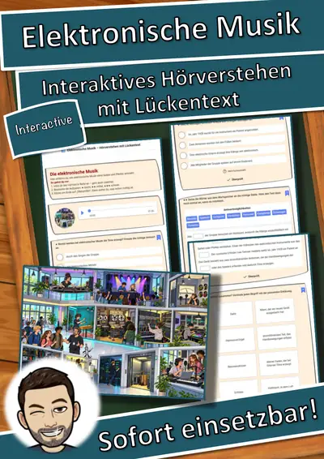

Elektronische Musik – vom Theremin bis zum Laptop – Lesespurgeschichte mit Rätselaufgaben (Klasse 10)
Elektronische Musik – vom Theremin bis zum Laptop – Lesespurgeschichte Musik (Klasse 10)Begib dich mit deiner Klasse auf eine spannende Lesespur durch hundert Jahre elektronische Musik! Noemi und Kerem besuchen mit ihrem Musikkurs den Tag der offenen Tür in einem Elektronikstudio: Im Thereminraum erklingt ein Instrument, das man spielt, ohne es zu berühren, im Tonbandstudio erfahren sie, wie in den 1950er-Jahren Musik mit Schere und Klebeband entstand, an der Synthesizerwand bauen sie Klänge aus Oszillator, Filter und Hüllkurve. In der Drumcomputer-Ecke entsteht ein Beat, im Samplerlabor wird ein Klatschen zum Instrument, an der DJ-Kanzel geht es um Techno, House und BPM, im Schallmessraum um den Schutz der Ohren – und auf der Lichtbühne spielen alle ihren eigenen Track. Ihr Klinkenstecker Plug ist immer dabei. Am Ende jedes Abschnitts verrät ein Hinweis den nächsten Ort auf dem Plan – nur wer genau liest, findet den Weg und sammelt alle geheimen Buchstaben zum Lösungswort.
Die perfekte Lesespur für den MUSIKUNTERRICHT der 10. Klasse – ideal zum Thema Musik und Technik: Sie verbindet sinnentnehmendes Lesen mit Musikgeschichte, Klangerzeugung und verantwortungsvollem Hören. Das Material ist SOFORT EINSETZBAR und in DREI DIFFERENZIERUNGSSTUFEN (leicht ★ / mittel ★★ / schwer ★★★) angelegt.WICHTIG: Das komplette Material ist sowohl in FARBE als auch in SCHWARZ-WEISS enthalten – ideal zum Sparen von Druckkosten.DAS IST ENTHALTEN
- Lesespurgeschichte in 3 Niveaus (leicht, mittel, schwer)
- farbiger Plan als Suchkarte
- Hörverstehen mit QR-Code zur MP3 (selbstständiges Hören mit Kopfhörern)
- vier Aufträge auf dem Weg: eine Zuordnung, ein Quiz, eine Rechenaufgabe und ein Steckbrief
- Rätselseite (Wörter-Suchsel + Fragen)
- Ausmalbild zum Thema (Jugendliche am Synthesizer)
- ausführliches Lösungsblatt für die Lehrkraft
- alles zusätzlich als komplette Schwarz-Weiß-VarianteSO GEHT DIE LESESPURDie Jugendlichen lesen ab START, finden im Text den nächsten Ort, suchen ihn auf dem Plan und lesen bei dieser Station weiter. An jeder richtigen Station gibt es einen Buchstaben. Eingebaute Sackgassen (Kabellager, Teeküche, Serverraum, Aufzug) sind keine Stationen und dienen der Selbstkontrolle. Am Ende werden die gesammelten Buchstaben umgestellt und ergeben ein geheimes Lösungswort. (Die Lösungen sind selbstverständlich nur im Lösungsblatt für die Lehrkraft enthalten.)INHALTLICHER SCHWERPUNKTDie Jugendlichen lernen die Entwicklung der elektronischen Klangerzeugung vom Theremin über Tonband, Synthesizer, Drumcomputer und Sampler bis zum Laptop-Studio kennen, ordnen Techno und House ein, berechnen Tempi in BPM und reflektieren den Schutz ihres Gehörs.ABGEDECKTER LEHRPLAN (Klasse 10, Musik)
- Musik (LehrplanPLUS Bayern) – Jahrgangsstufe 10 (Musik – Mensch – Zeit / Musik und Technik): Entwicklung und Grundlagen der elektronischen Klangerzeugung kennen, elektronische Tanzmusik einordnen und verantwortungsvoll mit Lautstärke umgehen.
- Deutsch – Lesen und mit Texten umgehen: Sachinformationen gezielt entnehmen; Zuhören: einem Sachhörtext konzentriert folgen (Hörverstehen mit MP3).
- Mathematik – Addition, Multiplikation und Hochrechnen (Schläge pro Minute).
- Fächerübergreifend / Kompetenzen: Physik (Schwingungen, Schall, Dezibel), Gesundheitserziehung (Gehörschutz), Medienbildung (Musikproduktion am Computer), genaues Lesen und Prüfen, kreatives Gestalten (Ausmalbild).
Geeignet für Freiarbeit, Stationenlernen, Vertretungsstunden, Wochenplan, Projekttage und Distanzunterricht. Klassenstufe 10.
Ähnliche Materialien

Elektronische Musik Lückentext mit Wortspeicher Hörverstehen und Suchsel

Theremin Lückentext mit Wortspeicher Hörverstehen und Suchsel

Elektronische Musik – Hörverstehen mit Lückentext (interaktiv)

Instrumente selbst bauen – Musik aus Dose und Karton – Lesespurgeschichte mit Rätselaufgaben (Klasse 1)

Hip-Hop – Rap, DJ und Beat – Lesespurgeschichte mit Rätselaufgaben (Klasse 9)

Drumcomputer Lückentext mit Wortspeicher Hörverstehen und Suchsel

Beat Lückentext mit Wortspeicher Hörverstehen und Suchsel